Copyright © 2008, 2023 Obeo - All rights reserved. This program and the accompanying materials are made available under the terms of the Eclipse Public License v1.0
Les diagrammes d’interaction permettent de définir des diagrammes de séquences sur quasiment la totalité des éléments définis dans Information System, à l’exception notable du métamodèle Database.
Les diagrammes d’interaction manipulent des concepts très proches des diagrammes de séquence UML.
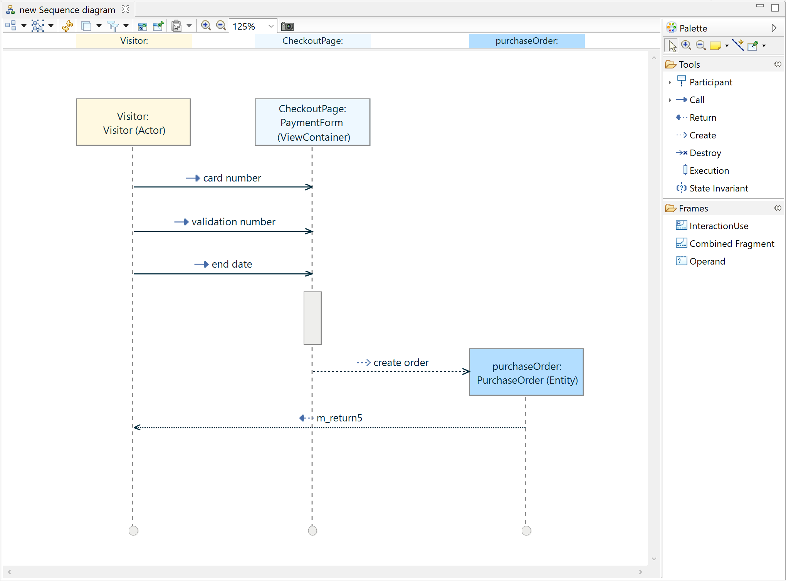
Un assistant de création de modèles d’Interaction est accessible via le menu :
File > New > Other ... > Interaction Model (Catégorie IS Designer)
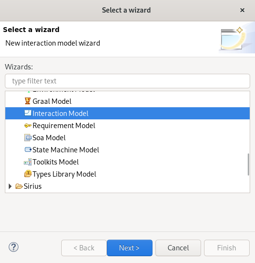
Cet assistant permet de définir
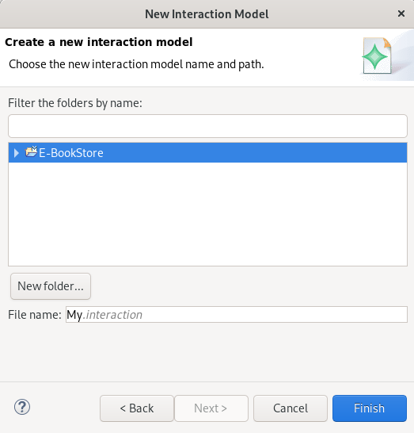
Une fois l’assistant validé, le modèle est créé.
Pour pouvoir créer un diagramme d’interaction il faut activer le point de vue Interaction sur le projet via le menu contextuel Viewpoints Selection sur le projet ou sur le fichier aird.
Une fois le point de vue activé, une entrée New interaction est ajoutée au menu contextuel des éléments pour lesquels un diagramme d’interaction peut être créé.
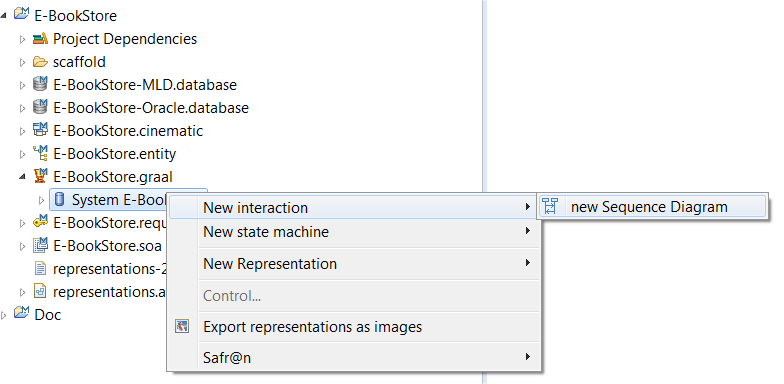
Un object
Interaction et un diagramme de séquence sont alors créés et visibles sous l’objet sélectionné.
Il est possible de créer autant de diagrammes de séquence que voulu pour un même objet.
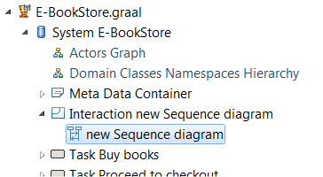
Les éléments suivants sont affichés sur le diagramme :
Les outils fournis par la palette sont :
| 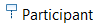 | Création d’un participant et de sa ligne de vie. |
| Création d’un message d’appel simple. | |
| 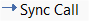 | Création d’un message d’appel synchrone. Un message d’appel simple est créé, une zone d’exécution est créée sur le participant appelé, enfin un message de retour vers le participant initial est créée. |
| 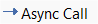 | Création d’un message d’appel asynchrone. Un message d’appel et une zone d’exécution sur le participant appelé sont créés. L’appel étant asynchrone, aucun message de retour n’est créé. |
| 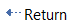 | Création d’un message de retour. |
| 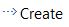 | Création d’un message de création. L’initialisation du participant est rattachée à l’extrémité du message. |
| 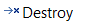 | Création d’un message de destruction. La ligne de vie du participant appelé est interrompue par une croix au niveau de l’extrémité du message. |
| 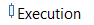 | Création d’une zone d’exécution. |
| 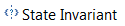 | Création d’un invariant d'état. |
| 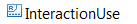 | Création d’un lien vers un autre diagramme d’interaction. |
| 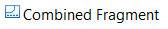 | Création d’un fragment combiné. |
| 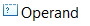 | Création d’une opérande. |